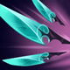

起手裝備
 長劍
長劍
重排為鬼索、那歐、殞落、臨界點、颶風；先用普攻縮短基本技能冷卻，再補百分比命中與雙穿。沒有把那歐錯寫成物攻裝，也不疊兩件百分比穿透。 長劍起手保留；五成裝與獨立二、三級鞋線已分開，未照抄外站 Galeforce 鞋附魔欄。




五件成裝與鞋子分開列示；起手與核心是購買路線，不是額外佔用的成裝欄位。鞋子完成時機仍依對線壓力與回城金錢調整。


致命節奏與兇蠻服務二技連續命中，斷切打高血量階段普攻，血脈與骨甲維持續戰、防第一輪強開。


預設閃現＋光盾，保住寇格魔第一輪輸出；光盾在爆發落下前使用，不拿它代替躲避關鍵控制。
加點優先：W > Q > E
W > Q > E：二技射程與最大生命傷害為核心，一技次滿增攻速並削雙防；原序列有效。
死亡後仍可短暫移動並逐步提高跑速，效果結束時爆炸，對附近敵人造成真實傷害。
射出腐蝕唾液造成魔法傷害，並在一段時間內降低目標物防與魔防；技能被動提供攻速。
短時間提高普攻距離，並讓普攻附加依目標最大生命計算的魔法傷害，是主要持續輸出技能。
向前吐出虛空淤泥造成魔法傷害，並留下緩速路徑，用於留人、封路或阻止敵方貼近。
遠距轟擊指定區域，造成魔法傷害並揭露命中敵人；對低生命目標傷害更高，短時間連續施放會增加耗魔。
二技有持續時間，不能把那歐減冷卻描述成無條件永久開啟；需要先安全普攻，二技空窗要後退。
1技削雙防 → 2技增射程 → 遠距普攻 → 持續走砍
一技命中後再開二技，利用雙防降低與額外射程打一輪安全普攻。二技結束就後撤，不要在沒有位移的情況下繼續站樁。
3技緩速 → 1技削雙防 → 2技增射程 → 普攻輸出 → 4技補傷害
先用三技限制走位，再接一技與二技持續輸出；大絕放在目標撤退位置，避免過早連發造成魔力不足。
1技命中前排 → 2技開火 → 攻擊最近目標 → 3技封突進 → 4技收殘血
團戰只打安全目標即可。三技保留阻擋刺客與鬥士，等殘血出現再用大絕收尾，不要為了攻擊後排離開保護範圍。
寇格魔前期沒有位移，主要任務是保持血量、穩定補刀並避免在二技冷卻時硬打長換血。對手走位靠前時，可先用一技削減雙防，再開二技利用額外射程與最大生命魔法傷害輸出；三技應優先放在敵方追擊路線，替自己創造拉開距離的空間。
鬼索與那歐成形後，在二技射程內持續普攻縮短基礎技能冷卻，先命中一技削雙防；第三件殞落加強對前排輸出。二技結束或敵方切入時立刻回到輔助身旁，不因那歐就長時間站樁。
團戰開啟二技後站在最大射程持續走砍，先用一技降低前排雙防，再依靠百分比傷害與芮蘭颶風箭處理多人。沒有閃現或隊友保護時不要獨自走進側翼；遭到貼身時以三技緩速、光盾與閃現拉開，活著持續輸出比追後排更重要。
圖奇可從側翼直接開大，凱特琳與燼可在二技空窗壓血；進河道前讓隊友探路，保留光盾和閃現處理第一次突進。 威脅名單採同分路指南，較有利名單保留機制判斷並移除與威脅名單重疊者；現有輔助組合逐項複核技能互動後保留。
對局名單是機制與分路判斷，不代表固定勝率；需同時看雙方熟練度、兵線與陣容。
圖奇可從側翼直接開大，凱特琳與燼可在二技空窗壓血；進河道前讓隊友探路，保留光盾和閃現處理第一次突進。
下列輔助配合以技能互動為依據。露璐、米里歐、珍娜仍可配合本頁打法；先確認對手輔助的控制與兩邊召喚師技能，單一射手對局不代表必勝。
攻速、護盾、變形與大絕完整保護寇格魔，是最典型的後期保排組合。
增程與解控能讓寇格魔維持最安全輸出距離，對抗突進也更穩定。
擊退、擊飛與護盾能阻止敵方貼身，替寇格魔保留持續輸出空間。
依寇格魔的二技最大生命魔法傷害與命中特效路線選擇替換；先看實際死亡與傷害不足原因。
依敵方前排成形調整
觸發：敵方前排已形成高生命或高防禦，正面輸出受阻。
寇格魔保留前述五成裝加獨立鞋線；同一格不同情境擇一替換，不全部加購。
臨界點已提供物理與魔法穿透；不用另一件百分比穿甲硬疊。
保命格可提早
觸發：被同一輪突進秒殺，無法打出主要技能與普攻。
芮蘭颶風箭 → 守護天使
主要死亡原因是刺客或突進一次切入，且隊友能掩護復活位置。
芮蘭颶風箭整格換守護天使，犧牲部分二技最大生命魔法傷害與命中特效或持續防禦；復活後無人接應時先改善站位。
芮蘭颶風箭 → 魔提斯深淵
敵方主要擊殺來源是魔法爆發，且尚未裝另一件生命線裝備。
以芮蘭颶風箭換魔提斯處理魔法爆發；不把魔防誤當通用抗物理方案。
復活與魔法生命線處理的傷害不同，按實際威脅擇一；盾弓與魔提斯不重複保留。
先判斷控制能否解除
觸發：可解除的禁錮、暈眩等控制反覆中斷輸出。
芮蘭颶風箭 → 水星彎刀
可解除的控制反覆讓自己無法輸出，且閃現不能解決。
以芮蘭颶風箭換水星彎刀；主動要手動使用，不能解除擊飛或擊退，也不是舊版附魔。
水星彎刀是成裝，不佔鞋子升級；擊飛、擊退須靠預先走位或隊友保護。
治療已影響集火時
觸發：敵方持續治療抵銷集火，且團隊缺乏穩定重創。
臨界點 → 致死宣告
敵方持續治療難以處理，而且隊友無法負責重創。
整格替換臨界點，會失去魔穿、攻速與疊層雙防；先考慮由隊友補重創，不把此替換視為無代價。
需要時先用死刑宣告過渡；不要把所有敵方英雄都當成必出重創的理由。
團隊無其他反盾者才承擔
觸發：大量反覆護盾持續阻止集火，且自己能穩定命中目標。
芮蘭颶風箭 → 巨蛇鋒牙
隊友無法施加反盾，且護盾確實抵銷主要輸出。
芮蘭颶風箭換巨蛇鋒牙會犧牲原末段功能；寇格魔仍需保留主要輸出核心，只有單一小護盾時不換。
反盾屬團隊分工，不為一個小盾放棄整條普攻或技能路線。
本頁校正版本：7.3b；校正日期：2026-10-15。
參考來源標示版本：7.3b
Tier、出裝、符文與對局是本站編輯建議，不是官方推薦或已驗證台服勝率。v118延續同日v117的逐路複核，針對來源缺口及數值衝突再核對；未宣稱所有技能已在手機內逐級實測。
評級理由：同分路參考由 A 調為 S；鬼索與那歐使二技持續輸出路線更完整，但評級仍以隊友保護和穩定普攻為條件。
Riot 官方資料 ↗ · WildRiftFire 參考攻略 ↗
本頁延續2026/10/15 v117的飛龍路逐項複核，當前採用7.3b來源；來源只用作配置與機制參考，不等同官方推薦或台服即時勝率。
同分路參考由 A 調為 S；鬼索與那歐使二技持續輸出路線更完整，但評級仍以隊友保護和穩定普攻為條件。
歷史資料有後續調整時，以較新版本數值為準。
| 項目 | 調整前 | 調整後 |
|---|---|---|
| 基礎物攻 | 54 | 58 |